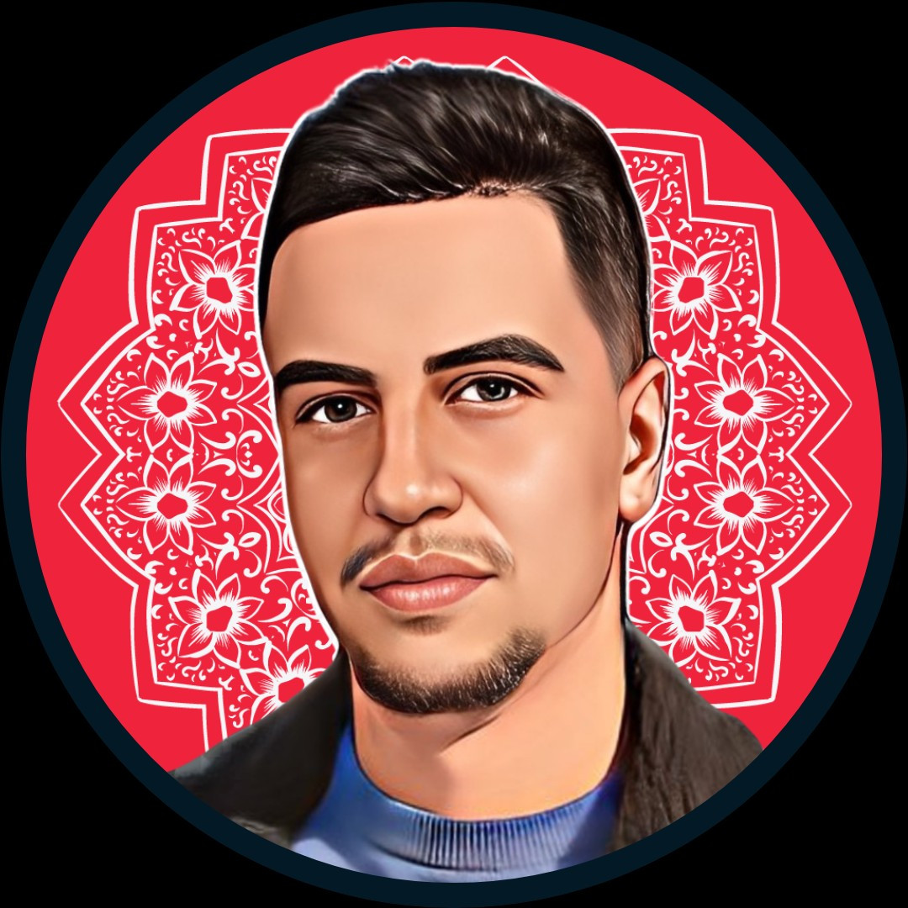

"One session with Badr cleared up six months of confusion. I left with written priorities, ran them for three weeks, doubled revenue."

Badr Shaqer · Founder Advisor
From zero
From zero
to seven figures.
I take real companies apart until the revenue problem shows itself. Then I give the founder the moves, the order, and the pressure required to get to seven figures.
BBA
MA Marketing
10+ years
01
Product · Consulting
For founders tired of guessing.
Bring the company, the numbers, and the ugly part. Ninety minutes with me on Zoom: we break the constraint down in plain English. Within twenty-four hours, the written priorities land in your inbox. Use them Monday.
01
Pre-session diagnostic
You send your numbers, your business model, and the part that's stuck. I read all of it before we meet.
02
90 minutes on Zoom
We attack the biggest constraint in your company. Each answer exposes the next layer. You leave with priorities, not options.
03
Written roadmap
Within 24 hours of the call, a written summary lands: what we agreed, the next moves, the order to run them in.
04
30-day follow-up
A short follow-up (30 minutes) to look at execution and correct course where it slipped.
02
The Book
Badr Shaqer
2025
How to sell
like a drug
dealer.
like a drug
dealer.
Book
First chapter free
How to sell
like a drug dealer.
Selling gets simple the day you stop worshipping campaigns and start understanding demand.
Because a dealer has no marketing budget, no sales team, no pitch deck · and still understands demand better than most founders who have all three.
Because scarcity, addiction, and distribution networks run the street market. The biggest brands in the world run on the same machinery, dressed up.
Because after this book, blaming the agency for your sales numbers will feel childish.
03
Results · Not theory
The numbers built by founders who worked with me.
Ten years inside founder problems across MENA. Pre-launch fog, first-million pressure, multi-market expansion. The pattern gets boring once you see it: bad priorities cost more than bad ideas.
5K+Founders advised
3M+Readers via network
200+Companies served
10+Years experience
"I read Badr's book in one sitting. It changed how I understand selling at the root. I don't need a marketing agency anymore."
"Badr doesn't sell you the dream. He shows you the mechanics. That's exactly what I needed. He saved me years of mistakes."
04
What I'm building
Almobadir · a publication of business
and finance for the Arab world.
Almobadir is my monthly publication for the Arab world. I write for people already carrying payroll, risk, and decisions · not the audience that's still planning to start. The network: three million readers, five thousand newsletter subscribers.
Almobadir is the public work. This page is the private room.
Read the latest issuePublication · Issue 01
3M+ readers
5K+ subscribers
Let's start
You have a real company.
You have a real company.
Act like it.
Book the call, or start with the book. Either way, stop circling the same problem and start dealing with how the company actually makes money.
© 2026 Badr Shaqer · All rights reserved